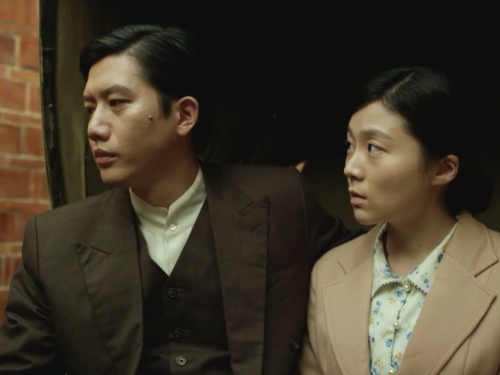
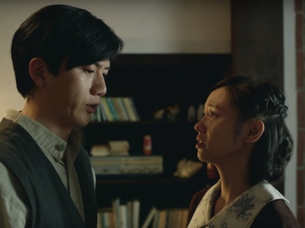

台北歌手
Roseki

故事背景是設定在臺灣動盪的政權更迭時期，從日據時代揭開序幕，以光復後的白色恐怖時期落幕。雖然架構在戰火正熾、時局緊張的年代，但劇情著重在人物心境的描繪，透過角色幽微的情緒，與社會氛圍形成反差，映照出大時代小人物的希望、無辜與無奈。
透過呂赫若的視角，我們看見那個年代的文青們，對於創作自由的渴望。從日據時代皇民化運動的壓榨，到戰後白色恐怖的迫害，不僅侷限文藝家的創意與思想，也損害著臺灣藝術的發展與價值。文人對政權輪替的期待，也逐漸衰落轉為失望，甚至對曾經夢寐以求的祖國產生質疑，並成為覺青踏上社運的抗爭之路。
臺灣有著複雜又多元的文化，在日據時期，多數人嘴上操著的是日語和臺語，同時也隨著每個人背景的不同，會使用客語和各原住民語來進行溝通，這與臺灣現今以國語為主要語言的環境差距甚大，也如實還原臺灣早期的真實面貌，以及在地文化的珍貴。
臺灣多數年老的長輩是生在日據時期，並接受過日本教育，對於那幾代的臺灣人而言，不免會有著自我認同的困擾，有的人追隨天皇，相信自己已同化為日本人，有的人則深信自己仍是中華民族。雖然故事引出民族意識的反思，日本在歷史上造成的傷害也是不可抹滅，但對於平民百姓來說，這是無關政治，卻活生生的共同記憶。
呂赫若可謂擁女主義者的代表，其作品道盡本島女性的悲哀，利用文字的力量，替遭受陳舊觀念束縛的臺灣傳統女性發聲，雖然與現時時隔一甲子之久，但他為女權帶來的社會反思，可能還遠超過當今社會。不過，縱然呂赫若筆下散發著女性意識的抬頭，可實際上也是他做為一名身在傳統年代的男性，試圖一同掙脫傳統枷鎖的吶喊。
呂赫若與妻子是經媒妁之言結為連理，渴望戀愛自由的他，在遇見與自己相當契合的女性後，便流連在兩個家庭之間。呂赫若的外遇對象蘇玉蘭，被塑造為一名「馬克思女孩」，她擁有極高的女性意識與才華，並努力追隨思想潮流，成為新時代的女性，可是當她面對愛情時，卻又甘願做個屈就男性的小女人。
不管是支持女性追求自我，卻傷及糟糠之妻的呂赫若，還是追求女權，最終仍然依附男性的蘇玉蘭，抑或是以家庭為重，選擇對丈夫的婚外情睜一隻眼閉一隻眼的元配林雪絨；從現代的觀點來看，主角的行為或許說來可笑，但若是以當代的視角切入，其實不難體會時代人物面對理想和現實的衝突，而懷有既矛盾又無能為力的心境，同時，也透過人物的經歷，真切地批判著有害的社會價值觀。
本劇在描述呂赫若生平的同時，以舞台劇的形式穿插，呈現呂赫若的小說世界。起初不免會對這樣的呈現手法產生疑慮，但劇中的劇場設計令人驚豔，不管是色調或是空間設計，都別出心裁地與角色貼合，處處具有巧思，就連由專業人員操控的假狗，都能細膩地表達出動物肢體的各個細節動作。小說世界和現實的相呼應，更是毫無違和地完美接軌，連同情緒和情節都一併銜接，幾乎不見刻鑿痕跡，令觀眾能夠舒適地同時享受電視劇與舞台劇兩種娛樂。
本劇的主要演員群均一人分飾多角，莫子儀挑大樑的演出，明顯比多年前在《罪美麗》中的表演更加純熟、更注重細節，他在五個角色間轉換自如，為各個角色設立明晰的差異點，並帶來獨特的特色。飾演四名角色的黃姵嘉，演出教人驚艷，其演技極具爆發力與震撼力，不管是粗俗豪放的性格，抑或是文靜深沉的心境，都描摹地極為細膩、真實，表現格外搶眼。楊小黎雖然戲分少，但在詮釋元配的心境上，相當內斂，能夠在有限的時間裡，利用表情牽動整個氛圍與觀眾的情緒。
配角群多是具有輔助主角演出的實力，特別是陳家逵與溫吉興的表現令人印象深刻。陳家逵在小說世界中，將兩個不同樣貌的惡角，演繹出迥異的風味，溫吉興則是豪放地把玩演技，盡情突破表演的框架，揮灑各種演出的可能性。
本劇堪稱2018年上半年最佳臺劇，除了擁有時代劇的水準基底，其在經費有限的情況下，活用戲劇的元素，以舞台劇的方式穿插故事，卻不減整體品質，反而提升劇集的藝術性。故事描繪細膩、富含深度，用溫和的手法，輔以音樂，帶出強烈的人物心境，演員的演技能屈能伸，多樣又深刻。
劇情藉由呂赫若的作品探討女權議題，卻未受世代流逝影響，依舊立身於潮流之中，思想還可能超越現代女性。透過動盪年代的政治變革，反映人民對平靜生活的渴求，也還原馬克思主義的美好原樣，流露文人的理想，以及藝術遭受迫害、被人遺忘的悲哀。
在各方面均呈現高品質的臺劇，難得一見，看完劇集後的一個多月，仍舊沉浸在結尾帶來的淡淡哀傷，可以預見《台北歌手》斬獲今年的金鐘獎，期待能以黑馬之姿再創金鐘紀錄，為臺劇注入堅強的實力，成為新指標。
以上圖片為製作公司所有。